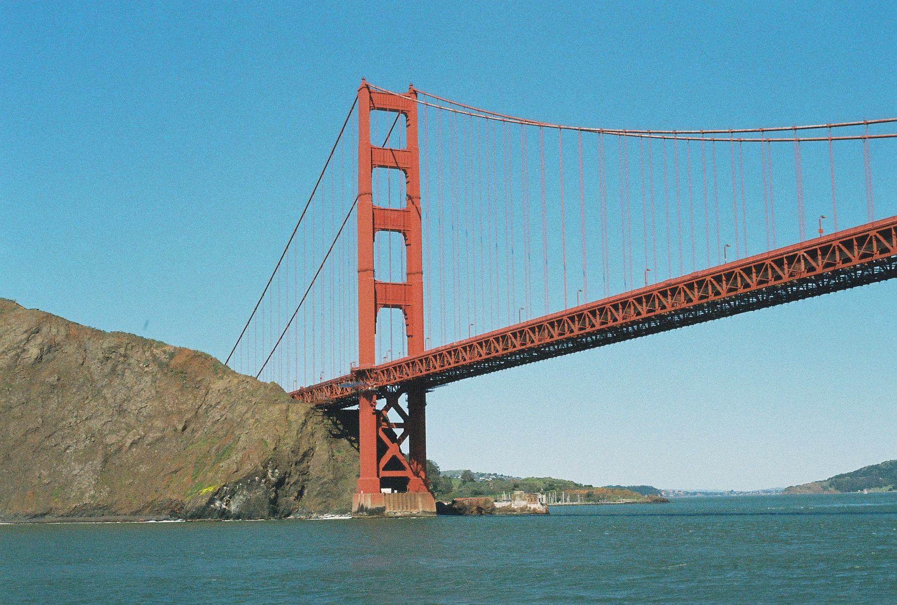
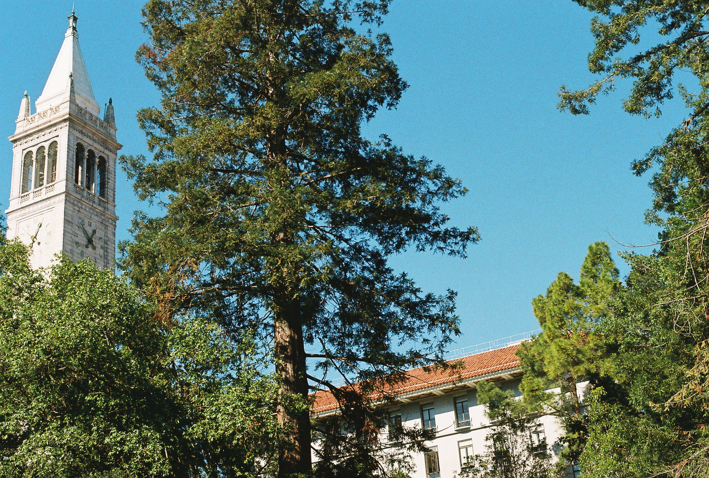
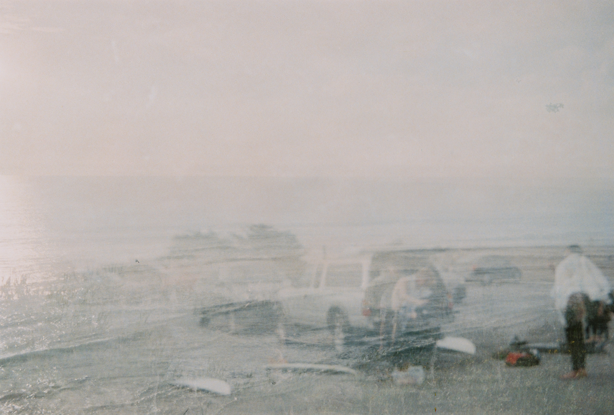
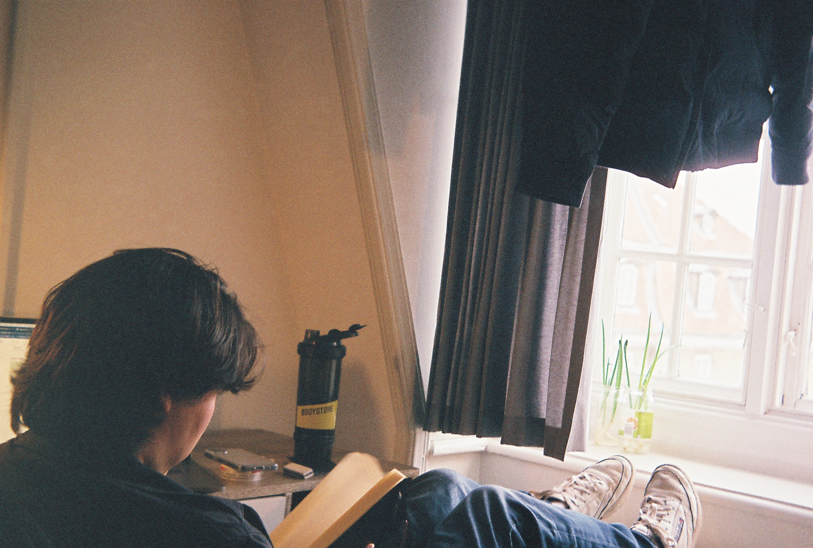
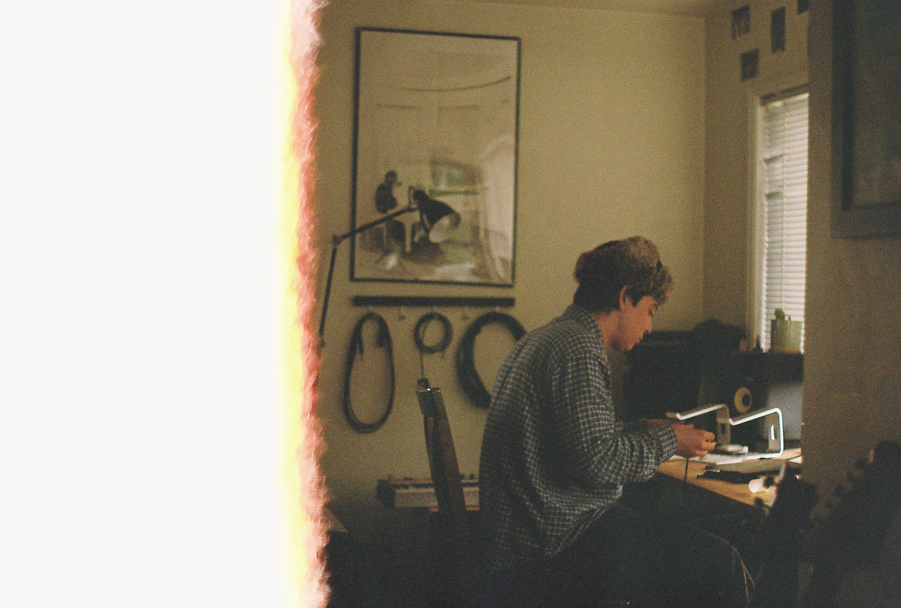
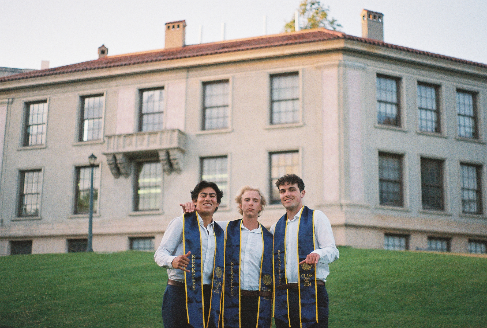

May we all sit with our thoughts and express them in multiple mediums. The beauty of a captured momemt, a scene and an emotion to take with you, a guiding light.
Parcels of Patterns
A keen eye is required to see these Parcels
Concealed within the uplift of struture,
unleveled foundation
exposed world
Interior to the eye, the mind desires enrichment by a construction and unraveling
of life beyond the Patterns



Toute Le Monde
upon a train, over the tracks, layed before, what is next
Sitting, being pushed, farther and farther, beyond,
I hope to see, where I go as much as where I may be,
Strengthen the knot, fasten the rope,
The best you can do, No way to do better,
You are who you are amidst all of the world.


